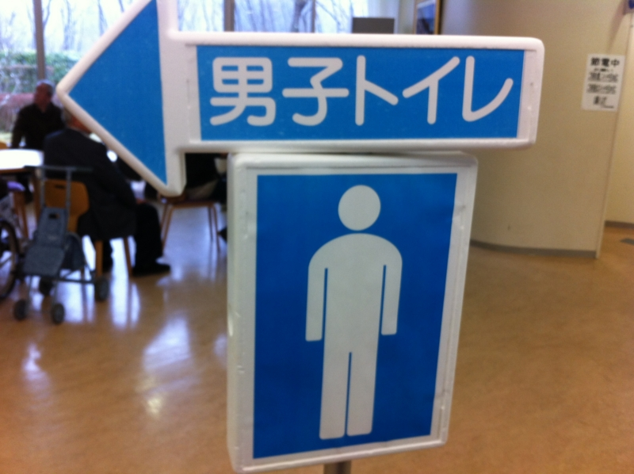

じいちゃんの墓参りに行ってきた
公開日：

じいちゃんの墓参りに行ってきた。じいちゃんは生前熱心な創価学会の会員だったので、墓地も創価学会の施設にある。自分はあまり宗教に興味もなく、父が毛嫌いすることもあって、少しそういうものを敬遠していたのだけど、墓参りに行っていないことはずっと気にしていたので、今回混ぜてもらった。知らない人間が行くと、いろいろ面白い。
- なんか受付が市役所みたいだった
- 建物が立派
- まったく知らない人同志でもおしゃべりしてたみたい
- おじいさん・おばあさんから孫まで、みんなで一緒にきてた
- 自然と助け合い・譲り合いの雰囲気があった
- みんな中流階級って感じだった
- お経の合唱、自分は知らないのでちょっと居心地が悪かった
- 日蓮上人と池田大作先生は偉いらしい
昨日競艇場で、今日創価学会の墓地だと、なんだか世界が違いすぎて少しクラクラした。競艇場だと
- 入場は100円玉入れるタイプの自動改札
- 建物が立派
- 皆自分の新聞とにらめっこしてる
- だいたい独り、よくて2，3人連れ
- 結構殺伐としてる
- 日曜日だけど作業着
- レース中はめいめいが違う選手の名前を怒鳴っている
- お金と笹川さんがエラい
みたいな感じ。ニコニコしながら競艇新聞と100円玉握って橋を渡ってくるおっさんたちも好きなのだけど、まぁ、こうも世界が違うもんだなぁ、と。まったく、イヌとネコぐらいに違う。

それはともかく、久しぶりに母方の親戚と一緒に飲んで、じいちゃんの昔話したり、近況を語り合ったりするのは楽しかった。また折を見つけていこうと思う。伊賀の方の墓参りにも、近いうちに行きたい。